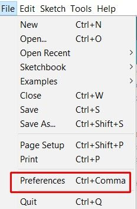
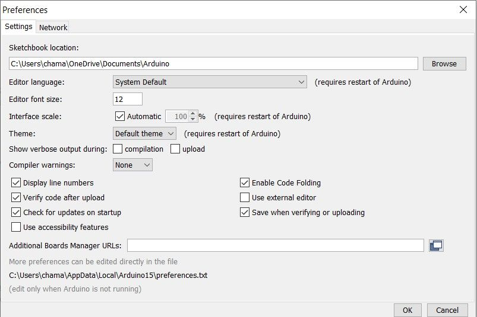
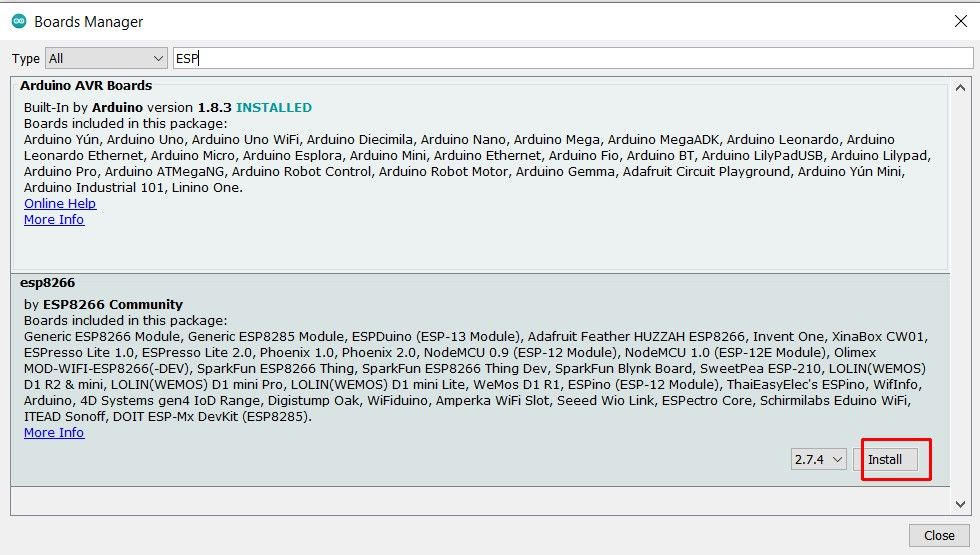
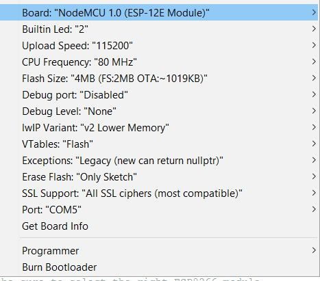

“If you think that the internet has changed your life, think again. The IoT is about to change it all over again!” — Brendan O’Brien, Chief Architect & Co-Founder, Aria Systems
NodeMCU is a low-cost open-source IoT system. but in general, NodeMCU stands for hardware based on ESP8266 Wi-Fi SoC. Basically, this is a development board like Arduino. There are some significant differences between common AVR based Arduino board and NodeMCU.I will discuss those in another article. Not like Arduino, we can use many languages for NodeMCU like Lua scripting language, Micro-python. But to make things easy I will discuss with well-known Arduino language.
Let get started with NodeMCU.I think You may configure Arduino IDE now. If not follow this.
-
Go to Arduino IDE. Files > Preferences.
 -
Paste this URL in the Additional Board Manager URLs tab > OK
http://arduino.esp8266.com/stable/package_esp8266com_index.json
-
Go to Tools > Boards > Board Manager.

-
Search for
esp8266. Click install.

Now you have All set and Ready to Go!!!. Try something from Examples.
- select your board ( Mine is NodeMCU 1.0)
You may see new options here. If you are not familiar with those keep default settings.

- Select your COM port and Upload!!!
- NodeMCU is very useful when it comes to IoT because of having built-in Wi-Fi.
Stay Tuned for the new IoT tutorial series.